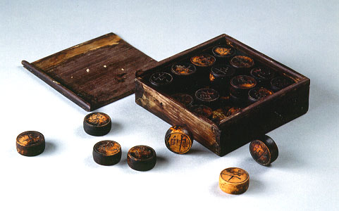

義助慰安婦 —— 李敖百件珍藏義賣藝術品（第75件） 品 名： H5. 台灣木雕雙面象棋 預估價： 20 萬 成交價： （保留） 說 明： 這是一個少見的本土文物。錦盒（包裝古典物品用的盒子）本身設計得很精巧，是台灣製的「吳記錦盒」，比大陸製的還要好。象棋的棋子兩面都有雕刻，相當考究，約有 200年以上的歷史。 
這是一個少見的本土文物。錦盒（包裝古典物品用的盒子）本身設計得很精巧，是台灣製的「吳記錦盒」，比大陸製的還要好。象棋的棋子兩面都有雕刻，相當考究，約有 200年以上的歷史。